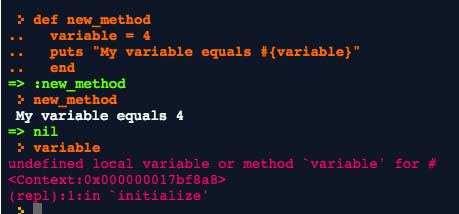
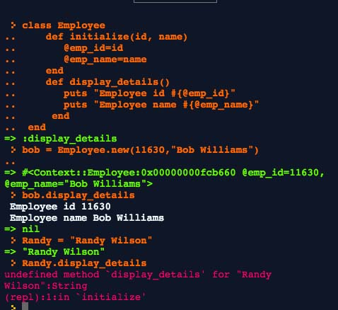

Ross Reckons


Hey all, today I want to go over variable scope and the fun variables you'll see in Ruby.
First of all, variable scope is a common term and really what it is referring to is when a variable is able to be accessed. What determine whether a variable is able to accessed depends on what kind of variable it is and where it's created. To illustrate this, I'll go through the 5 kinds of variables and how they are different.
We'll start with a local variable. These we use often inside methods or blocks, and they can only be accessed within those methods or blocks. Take a look:

Here I created the variable "variable" inside the "new method". When I call the new method, Ruby can read the variable as 4, but when I try to call the variable outside the method, I get the "undefined local variable or method" error.
Let's take a look at the instance variable. These always begin with an at sign: @. These are defined within a class and every object created from that class (instance of that class) can have it's own value for that variable. That means that you can only access these variables with objects that are created from the class that has the instance variable defined. Let's take a look:

I created a new class called employee with "@emp_id" and "@emp_name" as my instance varibles. I created Bob which is an instance of that class, so when I run the class method "display details" (which references the instance variables), it knows what to do. When I create a variable randy, it doesn't recognize the method or variables in the Employee class because it's part of the string class.
Next there are class variables which are set for each class. Let's say that I wanted to make a car class and I knew that all the cars/instances of that class would have four wheels, then I might make a class variable of wheels and set it equal to four. You can quickly spot class variables because they have two at signs infront of them. For example "@@wheels".
Global variables are next. These begin with dollar signs and they have a global scope. This means that they can be accessed anywhere. These are used pretty rarely compared to instance variables, class variables, or local variables because they tend to make object oriented programs less flexible. Nonetheless, they are good to know about if you're in a pinch.
Finally, we have constants. These also have a global scope, but they aren't meant to be changed or altered by your program - just referenced. A lot of times you store data that you'll reference in a constant. They're easy to spot because their names are in UPPERCASE.
I hope you enjoyed today's technical blog - let me know if you have any feedback!
Archive